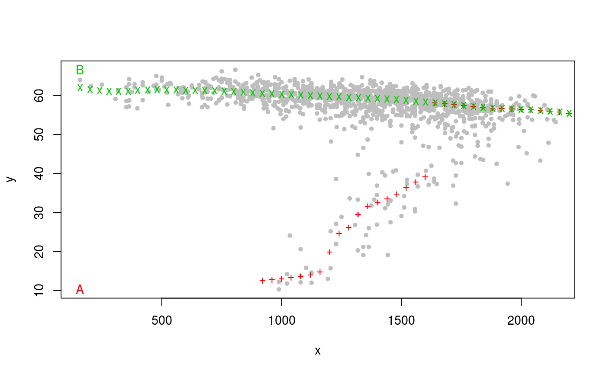

Nonparametric multi-valued regression based on the modes of conditional density estimates.
modalreg(x, y, xfix = seq(min(x), max(x), l = 50), a, b, deg = 0, iter = 30, P = 2, start = "e", prun = TRUE, prun.const = 10, plot.type = c("p", 1), labels = c("", "x", "y"), pch = 20, ...)
| x | Numerical vector: the conditioning variable. |
|---|---|
| y | Numerical vector: the response variable. |
| xfix | Numerical vector corresponding to the input values of which the fitted values shall be calculated. |
| a | Optional bandwidth in \(x\)-direction. |
| b | Optional bandwidth in \(y\)-direction. |
| deg | Degree of local polynomial used in estimation (0 or 1). |
| iter | Positive integer giving the number of mean shift iterations per point and branch. |
| P | Maximal number of branches. |
| start | Character determining how the starting points are selected.
|
| prun | Boolean. If TRUE, parts of branches are dismissed (in the
plotted output) where their associated kernel density value falls below the
threshold |
| prun.const | Numerical value giving the constant used above (the higher, the less pruning) |
| plot.type | Vector with two elements. The first one is
character-valued, with possible values |
| labels | Vector of three character strings. The first one is the "main" title of the graphical output, the second one is the label of the \(x\) axis, and the third one the label of the \(y\) axis. |
| pch | Plotting character. The default corresponds to small bullets. |
| … | Other arguments passed to |
A list with the following components:
Grid of predictor values at which the fitted values are calculated.
A
[P x length(xfix)]- matrix with fitted j-th branch in the j-th row
(\(1 \le j \le P\))
A vector with
bandwidths a and b.
A [P x
length(xfix)]- matrix with estimated kernel densities. This will only be
computed if prun=TRUE.
The pruning threshold.
Computes multi-modal nonparametric regression curves based on the maxima of
conditional density estimates. The tool for the estimation is the
conditional mean shift as outlined in Einbeck and Tutz (2006). Estimates of
the conditional modes might fluctuate highly if deg=1. Hence,
deg=0 is recommended. For bandwidth selection, the hybrid rule
introduced by Bashtannyk and Hyndman (2001) is employed if deg=0.
This corresponds to the setting method=1 in function
cde.bandwidths. For deg=1 automatic bandwidth selection is not
supported.
Einbeck, J., and Tutz, G. (2006) "Modelling beyond regression functions: an application of multimodal regression to speed-flow data". Journal of the Royal Statistical Society, Series C (Applied Statistics), 55, 461-475.
Bashtannyk, D.M., and Hyndman, R.J. (2001) "Bandwidth selection for kernel conditional density estimation". Computational Statistics and Data Analysis, 36(3), 279-298. tests for conditional density functions". Journal of Statistics, 14(3), 259-278.
lane2.fit <- modalreg(lane2$flow, lane2$speed, xfix=(1:55)*40, a=100, b=4)#> 10 ..20 ..30 ..40 ..50 ..